Chapitre 1 Régressions
données utilisées:
immoweb_louer.csv
census_2011_logements.xls
cantons_judiciaires_bxl_2018.gpkg
1.1 Préparation
Pour manipuler les données on utilisera les packages suivants:
On va utiliser les nouveaux packages suivants:
Pour réaliser cet exemple, on utilisera les données issues d’un scraping de Immoweb des logements à louer pour Bruxelles. Les adresses ont été géocodées avec Phacochr.
## Rows: 17735 Columns: 9
## ── Column specification ─────────────────────────────────────
## Delimiter: ";"
## chr (4): type, PEB, nb_chambres, cd_sector
## dbl (4): surface, loyer, x_31370, y_31370
## dttm (1): date_request
##
## ℹ Use `spec()` to retrieve the full column specification for this data.
## ℹ Specify the column types or set `show_col_types = FALSE` to quiet this message.1.2 Analyse de régression
1.2.1 Visualiser et supprimer les outliers
On peut analyser la relation entre la variable loyer et la variable surface, on peut simplement réaliser un graphique avec un geom_point:
## Warning: Removed 2066 rows containing missing values or values
## outside the scale range (`geom_point()`).
Pour analyser la relation entre les deux variables, il peut être utile de supprimer les valeurs abérantes (outliers). Ceci peut se faire de façon simple en retirant 1% de chaque côté de la distribution en appliquant un filtre et en conservant les loyer par surface supérieur au quantile 0.01 et inférieur au quantile 0.99:
loyers_data<- loyers_data %>%
filter(
loyer > quantile(loyer, prob = 0.01, na.rm = TRUE),
loyer < quantile(loyer, prob = 0.99, na.rm = TRUE),
surface > quantile(surface, prob = 0.01, na.rm = TRUE),
surface < quantile(surface, prob = 0.99, na.rm = TRUE))Pour supprimer les outliers, il est possible également d’utiliser de filtre plus “réfléchi” en analysant les données ou en utilisant des méthodes plus complexes : https://delladata.fr/comment-detecter-les-outliers-avec-r/
On peut alors revisualiser les données et on observe une relation beaucoup plus claire:

On peut ajouter une droite de régression sur le graphique grâce à geom_smooth:
loyers_data %>%
ggplot( aes(surface, loyer)) +
geom_point(alpha=0.3,cex=0.5)+
geom_smooth(formula = y ~ x, method = "lm")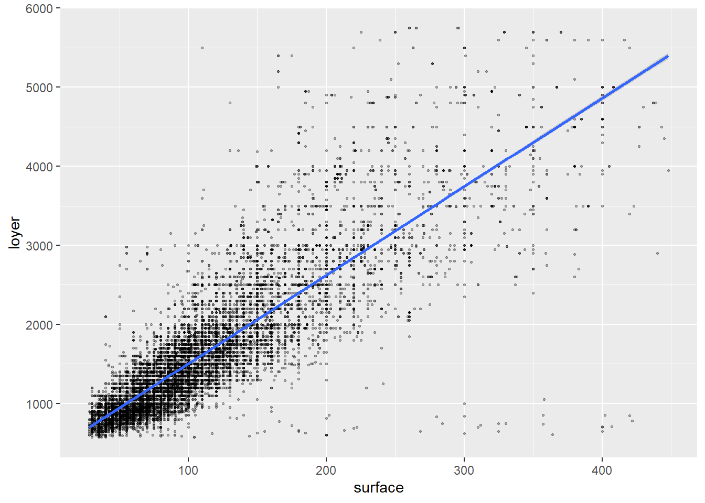
1.2.2 Régression simple
On peut réaliser une analyse de régression grâce à la fonction lm où Y = aX +b ce traduit par Y ~ X. Dans notre cas, on tente d’évaluer le loyer (Y) en fonction de la surface (X):
Pour afficher un résumé des résultats on utilise la fonction summary sur l’objet créer par la fonction lm:
##
## Call:
## lm(formula = loyer ~ surface, data = loyers_data)
##
## Residuals:
## Min 1Q Median 3Q Max
## -4328.9 -210.7 -50.8 147.6 3883.4
##
## Coefficients:
## Estimate Std. Error t value Pr(>|t|)
## (Intercept) 385.3549 7.0466 54.69 <2e-16 ***
## surface 11.1933 0.0557 200.97 <2e-16 ***
## ---
## Signif. codes:
## 0 '***' 0.001 '**' 0.01 '*' 0.05 '.' 0.1 ' ' 1
##
## Residual standard error: 435.8 on 15222 degrees of freedom
## Multiple R-squared: 0.7263, Adjusted R-squared: 0.7263
## F-statistic: 4.039e+04 on 1 and 15222 DF, p-value: < 2.2e-16Notez que l’objet model est un objet list qui contient une série de choses qu’il est possible d’aller chercher grâce au $ : model1\(coefficients les coefficients model1\)residuals les résidus model1$fitted.values les valeurs prédites
De même il est possible d’aller rechercher des éléments du résultat de summary appliqué sur le modèle: summary(model1)$r.squared le R²
1.2.3 Régression multiple
On peut décider de rajouter des variables dans le modèle en modifiant la formule Y = X1 + X2 + X3 + …
##
## Call:
## lm(formula = loyer ~ surface + type + PEB + nb_chambres, data = loyers_data)
##
## Residuals:
## Min 1Q Median 3Q Max
## -4185.1 -212.7 -38.6 154.0 2892.6
##
## Coefficients:
## Estimate Std. Error t value Pr(>|t|)
## (Intercept) 408.4328 27.3727 14.921 < 2e-16 ***
## surface 11.1487 0.1127 98.950 < 2e-16 ***
## typeHOUSE 21.0105 19.6294 1.070 0.284480
## PEBB 102.9783 23.7831 4.330 1.50e-05 ***
## PEBC 11.3038 22.9773 0.492 0.622762
## PEBD -69.1262 22.7818 -3.034 0.002417 **
## PEBE -82.0685 23.5270 -3.488 0.000488 ***
## PEBF -118.1271 25.2917 -4.671 3.04e-06 ***
## PEBG -99.2732 24.5295 -4.047 5.22e-05 ***
## nb_chambres1 -12.0105 19.0896 -0.629 0.529254
## nb_chambres2 4.8550 19.6849 0.247 0.805194
## nb_chambres3 156.4296 23.2023 6.742 1.64e-11 ***
## nb_chambres4 79.7030 31.7783 2.508 0.012153 *
## nb_chambres5+ -135.7740 42.2787 -3.211 0.001325 **
## ---
## Signif. codes:
## 0 '***' 0.001 '**' 0.01 '*' 0.05 '.' 0.1 ' ' 1
##
## Residual standard error: 410.4 on 11090 degrees of freedom
## (4120 observations effacées parce que manquantes)
## Multiple R-squared: 0.7633, Adjusted R-squared: 0.763
## F-statistic: 2751 on 13 and 11090 DF, p-value: < 2.2e-161.2.4 Régression polynomiale
1.2.4.1 Logarithme
Plutôt que de modéliser loyer en fonction de la surface, on pourrait avoir envie de modéliser le loyer selon le logarithme de la surface.
Alors on soit créer une nouvelle variable et réaliser la régression:
loyers_data$log_surface <- log(loyers_data$surface)
model3<- lm(loyer ~ log_surface + type + PEB + nb_chambres, data=loyers_data)
summary(model3)##
## Call:
## lm(formula = loyer ~ log_surface + type + PEB + nb_chambres,
## data = loyers_data)
##
## Residuals:
## Min 1Q Median 3Q Max
## -3415.2 -263.3 -50.6 200.8 2883.8
##
## Coefficients:
## Estimate Std. Error t value Pr(>|t|)
## (Intercept) -4067.02 67.47 -60.282 < 2e-16 ***
## log_surface 1320.08 16.31 80.923 < 2e-16 ***
## typeHOUSE 98.95 21.29 4.649 3.38e-06 ***
## PEBB 92.62 25.88 3.578 0.000347 ***
## PEBC 11.21 25.01 0.448 0.653853
## PEBD -56.46 24.79 -2.277 0.022783 *
## PEBE -67.66 25.60 -2.643 0.008226 **
## PEBF -105.00 27.52 -3.816 0.000137 ***
## PEBG -72.71 26.68 -2.725 0.006443 **
## nb_chambres1 -281.90 21.42 -13.161 < 2e-16 ***
## nb_chambres2 -458.09 24.36 -18.804 < 2e-16 ***
## nb_chambres3 -249.66 29.24 -8.538 < 2e-16 ***
## nb_chambres4 -137.41 37.64 -3.650 0.000263 ***
## nb_chambres5+ 130.42 46.17 2.825 0.004743 **
## ---
## Signif. codes:
## 0 '***' 0.001 '**' 0.01 '*' 0.05 '.' 0.1 ' ' 1
##
## Residual standard error: 446.6 on 11090 degrees of freedom
## (4120 observations effacées parce que manquantes)
## Multiple R-squared: 0.7198, Adjusted R-squared: 0.7194
## F-statistic: 2191 on 13 and 11090 DF, p-value: < 2.2e-16soit indiquer le logarithme directement dans la formule du lm
##
## Call:
## lm(formula = loyer ~ log(surface) + type + PEB + nb_chambres,
## data = loyers_data)
##
## Residuals:
## Min 1Q Median 3Q Max
## -3415.2 -263.3 -50.6 200.8 2883.8
##
## Coefficients:
## Estimate Std. Error t value Pr(>|t|)
## (Intercept) -4067.02 67.47 -60.282 < 2e-16 ***
## log(surface) 1320.08 16.31 80.923 < 2e-16 ***
## typeHOUSE 98.95 21.29 4.649 3.38e-06 ***
## PEBB 92.62 25.88 3.578 0.000347 ***
## PEBC 11.21 25.01 0.448 0.653853
## PEBD -56.46 24.79 -2.277 0.022783 *
## PEBE -67.66 25.60 -2.643 0.008226 **
## PEBF -105.00 27.52 -3.816 0.000137 ***
## PEBG -72.71 26.68 -2.725 0.006443 **
## nb_chambres1 -281.90 21.42 -13.161 < 2e-16 ***
## nb_chambres2 -458.09 24.36 -18.804 < 2e-16 ***
## nb_chambres3 -249.66 29.24 -8.538 < 2e-16 ***
## nb_chambres4 -137.41 37.64 -3.650 0.000263 ***
## nb_chambres5+ 130.42 46.17 2.825 0.004743 **
## ---
## Signif. codes:
## 0 '***' 0.001 '**' 0.01 '*' 0.05 '.' 0.1 ' ' 1
##
## Residual standard error: 446.6 on 11090 degrees of freedom
## (4120 observations effacées parce que manquantes)
## Multiple R-squared: 0.7198, Adjusted R-squared: 0.7194
## F-statistic: 2191 on 13 and 11090 DF, p-value: < 2.2e-16On peut faire un graphique de la façon suivante:
loyers_data %>%
ggplot( aes(surface, loyer)) +
geom_point(alpha=0.3,cex=0.5)+
geom_smooth(formula = y ~ log(x), method = "lm")
1.2.4.2 Division
On peut vouloir modéliser le loyer par surface en fonction de la surface:
loyers_data <- loyers_data %>%
mutate(loyer_surface= loyer/surface,
inv_surface= 1/surface)
model4<- lm(loyer_surface ~ inv_surface + type + PEB + nb_chambres, data=loyers_data)
summary(model4)##
## Call:
## lm(formula = loyer_surface ~ inv_surface + type + PEB + nb_chambres,
## data = loyers_data)
##
## Residuals:
## Min 1Q Median 3Q Max
## -11.2378 -2.1955 -0.4891 1.6736 31.3294
##
## Coefficients:
## Estimate Std. Error t value Pr(>|t|)
## (Intercept) 8.3490 0.3133 26.647 < 2e-16 ***
## inv_surface 513.5564 9.6383 53.283 < 2e-16 ***
## typeHOUSE 0.3212 0.1522 2.111 0.0348 *
## PEBB 0.8469 0.1857 4.561 5.14e-06 ***
## PEBC -0.0173 0.1793 -0.097 0.9231
## PEBD -0.7036 0.1776 -3.961 7.51e-05 ***
## PEBE -0.9432 0.1835 -5.139 2.80e-07 ***
## PEBF -1.1262 0.1973 -5.708 1.17e-08 ***
## PEBG -1.3072 0.1915 -6.827 9.11e-12 ***
## nb_chambres1 0.9402 0.1631 5.765 8.38e-09 ***
## nb_chambres2 1.8815 0.1948 9.659 < 2e-16 ***
## nb_chambres3 3.2194 0.2225 14.472 < 2e-16 ***
## nb_chambres4 3.0069 0.2709 11.099 < 2e-16 ***
## nb_chambres5+ 2.3830 0.3180 7.494 7.17e-14 ***
## ---
## Signif. codes:
## 0 '***' 0.001 '**' 0.01 '*' 0.05 '.' 0.1 ' ' 1
##
## Residual standard error: 3.204 on 11090 degrees of freedom
## (4120 observations effacées parce que manquantes)
## Multiple R-squared: 0.3567, Adjusted R-squared: 0.356
## F-statistic: 473.1 on 13 and 11090 DF, p-value: < 2.2e-16Le graphique avec le I dans le formule:
loyers_data %>%
ggplot( aes(surface, loyer_surface)) +
geom_point(alpha=0.3,cex=0.5)+
geom_smooth(formula = y ~ I(1/x), method = "lm")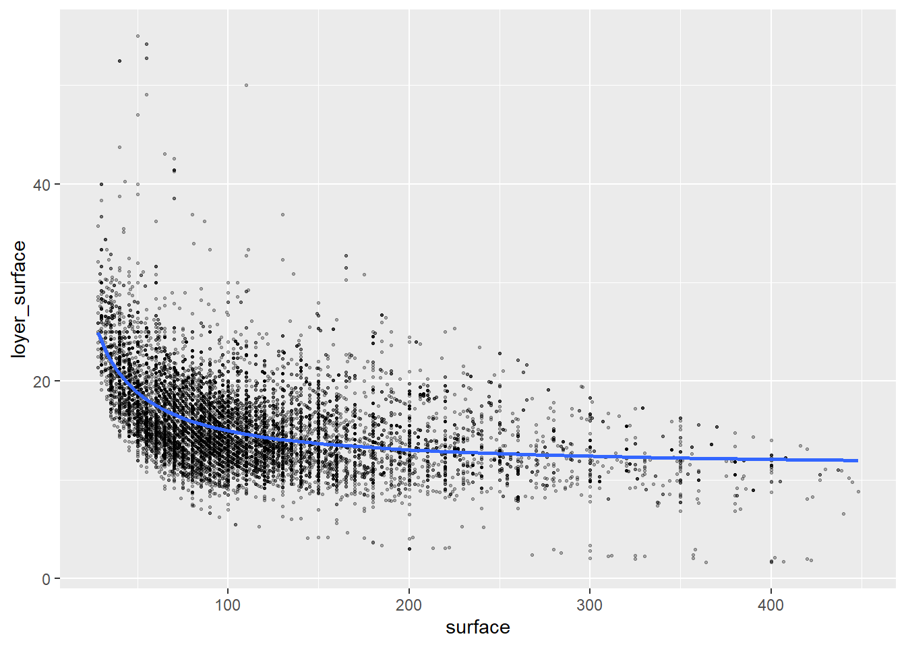
1.2.4.3 Exposants
On pourrait directement placer ces changements dans la formule mais alors il faut utiliser la fonction I() qui permet de réaliser ces opérations. La fonction I ( “come si” / “as is”) permet d’indiquer qu’il s’agit d’une formule et non pas une opération sur un vecteur et le ~ “est dépendant de”.
model5<- lm(loyer~ surface + I(surface^2) + type + PEB + nb_chambres, data=loyers_data)
summary(model5)##
## Call:
## lm(formula = loyer ~ surface + I(surface^2) + type + PEB + nb_chambres,
## data = loyers_data)
##
## Residuals:
## Min 1Q Median 3Q Max
## -4072.8 -213.4 -37.2 159.6 2881.1
##
## Coefficients:
## Estimate Std. Error t value Pr(>|t|)
## (Intercept) 3.562e+02 2.943e+01 12.105 < 2e-16 ***
## surface 1.259e+01 3.200e-01 39.332 < 2e-16 ***
## I(surface^2) -3.933e-03 8.187e-04 -4.804 1.58e-06 ***
## typeHOUSE 2.305e+01 1.961e+01 1.175 0.239960
## PEBB 9.977e+01 2.377e+01 4.197 2.72e-05 ***
## PEBC 6.240e+00 2.298e+01 0.272 0.785963
## PEBD -7.414e+01 2.278e+01 -3.254 0.001141 **
## PEBE -8.608e+01 2.352e+01 -3.660 0.000253 ***
## PEBF -1.216e+02 2.528e+01 -4.811 1.52e-06 ***
## PEBG -1.019e+02 2.451e+01 -4.156 3.27e-05 ***
## nb_chambres1 -3.119e+01 1.948e+01 -1.601 0.109455
## nb_chambres2 -4.329e+01 2.207e+01 -1.961 0.049890 *
## nb_chambres3 9.303e+01 2.667e+01 3.488 0.000489 ***
## nb_chambres4 1.865e+01 3.420e+01 0.545 0.585428
## nb_chambres5+ -1.391e+02 4.224e+01 -3.293 0.000993 ***
## ---
## Signif. codes:
## 0 '***' 0.001 '**' 0.01 '*' 0.05 '.' 0.1 ' ' 1
##
## Residual standard error: 410 on 11089 degrees of freedom
## (4120 observations effacées parce que manquantes)
## Multiple R-squared: 0.7638, Adjusted R-squared: 0.7635
## F-statistic: 2561 on 14 and 11089 DF, p-value: < 2.2e-16le graphique, de nouveau il faut bien utiliser I dans la formule:
loyers_data %>%
ggplot( aes(surface, loyer)) +
geom_point(alpha=0.3,cex=0.5)+
geom_smooth(formula = y ~ I(x+x^2), method = "lm")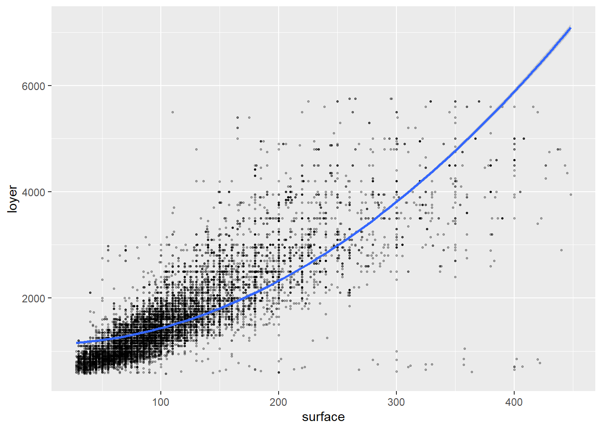
1.2.5 Visualisation
Il existe beaucoup de package pour faciliter la visualisation des résultats. # Par exemple pour visualiser rapidement le résultat de plusieurs modèle jtools permet de réaliser un tableau synthétique utile:
| Model 1 | Model 2 | Model 3 | Model 4 | Model 5 | |
|---|---|---|---|---|---|
| (Intercept) | 385.35 *** | 408.43 *** | -4067.02 *** | 8.35 *** | 356.21 *** |
| (7.05) | (27.37) | (67.47) | (0.31) | (29.43) | |
| surface | 11.19 *** | 11.15 *** | 12.59 *** | ||
| (0.06) | (0.11) | (0.32) | |||
| typeHOUSE | 21.01 | 98.95 *** | 0.32 * | 23.05 | |
| (19.63) | (21.29) | (0.15) | (19.61) | ||
| PEBB | 102.98 *** | 92.62 *** | 0.85 *** | 99.77 *** | |
| (23.78) | (25.88) | (0.19) | (23.77) | ||
| PEBC | 11.30 | 11.21 | -0.02 | 6.24 | |
| (22.98) | (25.01) | (0.18) | (22.98) | ||
| PEBD | -69.13 ** | -56.46 * | -0.70 *** | -74.14 ** | |
| (22.78) | (24.79) | (0.18) | (22.78) | ||
| PEBE | -82.07 *** | -67.66 ** | -0.94 *** | -86.08 *** | |
| (23.53) | (25.60) | (0.18) | (23.52) | ||
| PEBF | -118.13 *** | -105.00 *** | -1.13 *** | -121.61 *** | |
| (25.29) | (27.52) | (0.20) | (25.28) | ||
| PEBG | -99.27 *** | -72.71 ** | -1.31 *** | -101.86 *** | |
| (24.53) | (26.68) | (0.19) | (24.51) | ||
| nb_chambres1 | -12.01 | -281.90 *** | 0.94 *** | -31.19 | |
| (19.09) | (21.42) | (0.16) | (19.48) | ||
| nb_chambres2 | 4.86 | -458.09 *** | 1.88 *** | -43.29 * | |
| (19.68) | (24.36) | (0.19) | (22.07) | ||
| nb_chambres3 | 156.43 *** | -249.66 *** | 3.22 *** | 93.03 *** | |
| (23.20) | (29.24) | (0.22) | (26.67) | ||
| nb_chambres4 | 79.70 * | -137.41 *** | 3.01 *** | 18.65 | |
| (31.78) | (37.64) | (0.27) | (34.20) | ||
| nb_chambres5+ | -135.77 ** | 130.42 ** | 2.38 *** | -139.12 *** | |
| (42.28) | (46.17) | (0.32) | (42.24) | ||
| log(surface) | 1320.08 *** | ||||
| (16.31) | |||||
| inv_surface | 513.56 *** | ||||
| (9.64) | |||||
| I(surface^2) | -0.00 *** | ||||
| (0.00) | |||||
| N | 15224 | 11104 | 11104 | 11104 | 11104 |
| R2 | 0.73 | 0.76 | 0.72 | 0.36 | 0.76 |
| *** p < 0.001; ** p < 0.01; * p < 0.05. | |||||
On peut également exporter ce résultat en format pdf de la façon suivante:
# export_summs(model1, model2,model3, model4,to.file = "html", file.name = "TP08/tableau_regression.html")On peut visualiser un forest plot de cette façon grâce au package ggstats:
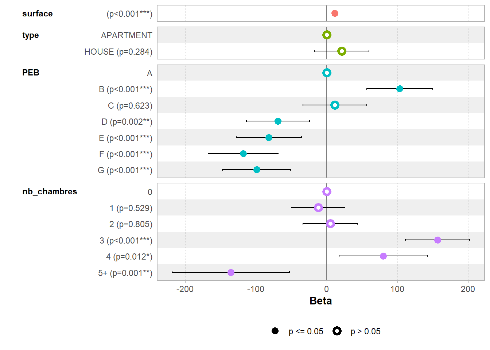
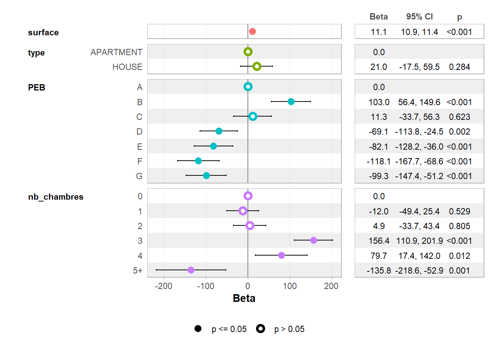
voir ici pour plus de détails: < https://cran.r-project.org/web/packages/ggstats/vignettes/ggcoef_model.htm >
1.2.6 Réaliser les tests des hypothèses
La réalisation de modèle de régression s’appuie sur une série d’hypothèses qu’il s’agit de vérifier dont: - la linéarité des résidus, - la constance de la variance des résidus, - la faible influence d’outliers, - la non colinéarité entre les variables explicatives, - la normalité des résidus.
< https://easystats.github.io/performance/index.html >
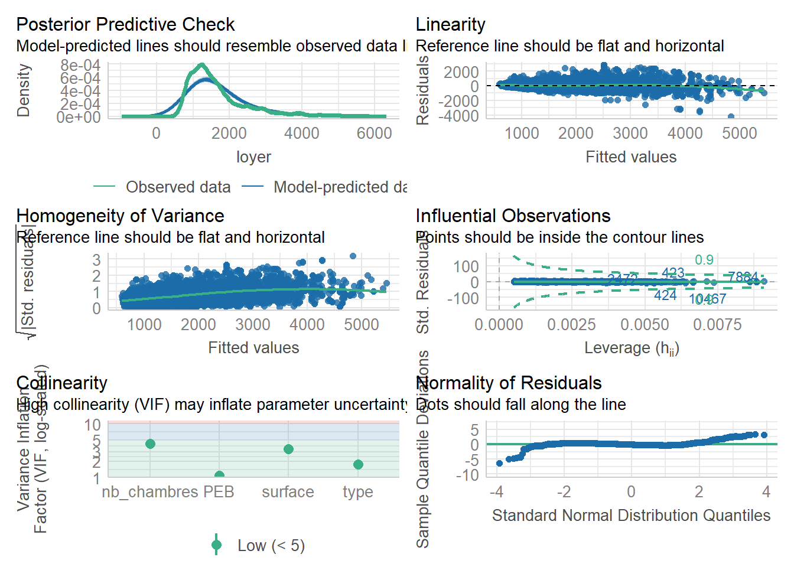
1.3 Analyse géographique
1.3.1 Analyse géographique simple
On peut réaliser une carte du loyer moyen par secteur statistique. On calculer par secteur statistique le nombre d’annonces et le loyer moyen:
loyer_moyen<-loyers_data%>%
group_by(cd_sector) %>%
summarise(
n=n(),
loy_moyen= mean(loyer, na.rm=T)
)On charge les secteurs statistiques
## Reading layer `secteurs_stats2023' from data source
## `C:\Users\hugop\Nextcloud\git\manuel_geo_quanti\data\sh_statbel_statistical_sectors_31370_20230101.gpkg'
## using driver `GPKG'
## Simple feature collection with 19795 features and 31 fields
## Geometry type: MULTIPOLYGON
## Dimension: XY
## Bounding box: xmin: 21991.63 ymin: 21162.16 xmax: 295167.1 ymax: 244027.2
## Projected CRS: BD72 / Belgian Lambert 72On fait une jointure entre le résultat du calcul précédent et les secteurs statistiques
loyer_moyen_sec<-secteurs_stats %>%
left_join(loyer_moyen, by=c("cd_sector")) %>%
filter(tx_rgn_descr_fr=="Région de Bruxelles-Capitale")On réalise la carte
mf_map(x = loyer_moyen_sec,col = "white", border = "grey")
mf_map(loyer_moyen_sec,
var= c("n", "loy_moyen"),
type="prop_choro",
pal= "Viridis",
inches=0.14,
nbreaks=5,
add=T)## 196 'NA' values are not plotted on the map.
1.3.2 Cartographier les résidus
Les résidus de la régression se trouve dans l’objet model produit par la fonction lm. Néanmoins il s’agit d’un objet list où le valeur manquantes ont été supprimée. Le package modelr permet de faire facilement la jointure entre les données de base et les résidus et calculer une moyenne des résidus par secteurs statistiques:
library(modelr)
resid<-loyers_data %>%
add_residuals( model2) %>%
group_by(cd_sector) %>%
summarise(moyenne_residus= mean(resid, na.rm=T),
n=n())On joint les résidus au fichier des secteurs statistiques
resid_sec<-secteurs_stats%>%
left_join(resid, by=c("cd_sector")) %>%
filter(tx_rgn_descr_fr=="Région de Bruxelles-Capitale")On fait une carte des résidus moyen par secteurs stats
mf_map(x = resid_sec,col = "white", border = "grey")
mf_map(resid_sec,
var= c("n", "moyenne_residus"),
type="prop_choro",
pal= "Viridis",
inches=0.15,
nbreaks=5,
add=T)## 196 'NA' values are not plotted on the map.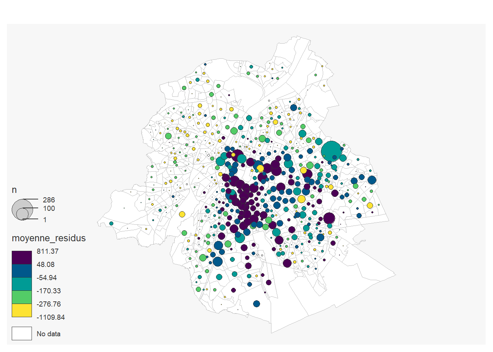
On peut alors observer là où le loyer est en moyenne pus élevé ou moins élevé que prédit par le modèle.
1.3.3 Ajouter une variable géographique
On peut ajouter une variable géographique comme l’indice de difficulté par secteur statistique de 2010 pour Bruxelles qui une bonne approximation de la division sociale de l’espace bruxellois:
## Rows: 7752 Columns: 2
## ── Column specification ─────────────────────────────────────
## Delimiter: ";"
## chr (1): Secteur statistique
## dbl (1): Indice synthétique de difficulté 2010
##
## ℹ Use `spec()` to retrieve the full column specification for this data.
## ℹ Specify the column types or set `show_col_types = FALSE` to quiet this message.indice_sec<-secteurs_stats%>%
left_join(indice, by=c("cd_sector"="Secteur statistique")) %>%
filter(tx_rgn_descr_fr=="Région de Bruxelles-Capitale")
mf_map(indice_sec,
var="Indice synthétique de difficulté 2010",
type="choro",
pal= "Viridis",
nbreaks=5)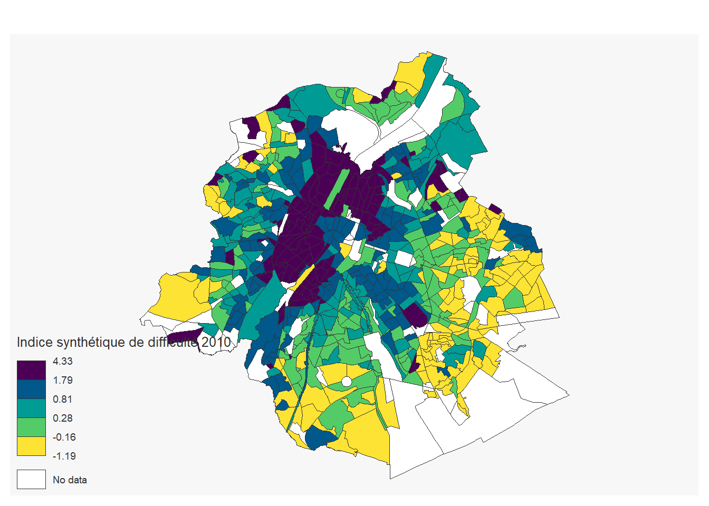
On peut alors ajouter cet indice dans un troisième modèle. Pour réaliser ceci on doit d’abord joindre les données
loyers_data<-loyers_data %>%
left_join(indice, by=c("cd_sector"="Secteur statistique"))
model6<-lm(loyer ~ surface + PEB+type+nb_chambres +`Indice synthétique de difficulté 2010`, data=loyers_data)
export_summs(model1, model2, model6)| Model 1 | Model 2 | Model 3 | |
|---|---|---|---|
| (Intercept) | 385.35 *** | 408.43 *** | 504.53 *** |
| (7.05) | (27.37) | (36.16) | |
| surface | 11.19 *** | 11.15 *** | 9.58 *** |
| (0.06) | (0.11) | (0.16) | |
| typeHOUSE | 21.01 | 75.26 ** | |
| (19.63) | (25.58) | ||
| PEBB | 102.98 *** | 90.67 ** | |
| (23.78) | (30.53) | ||
| PEBC | 11.30 | -30.36 | |
| (22.98) | (29.94) | ||
| PEBD | -69.13 ** | -79.09 ** | |
| (22.78) | (29.90) | ||
| PEBE | -82.07 *** | -111.85 *** | |
| (23.53) | (30.57) | ||
| PEBF | -118.13 *** | -119.83 *** | |
| (25.29) | (32.58) | ||
| PEBG | -99.27 *** | -138.68 *** | |
| (24.53) | (31.69) | ||
| nb_chambres1 | -12.01 | 7.97 | |
| (19.09) | (23.97) | ||
| nb_chambres2 | 4.86 | 73.96 ** | |
| (19.68) | (24.99) | ||
| nb_chambres3 | 156.43 *** | 250.02 *** | |
| (23.20) | (29.66) | ||
| nb_chambres4 | 79.70 * | 283.29 *** | |
| (31.78) | (40.85) | ||
| nb_chambres5+ | -135.77 ** | 75.90 | |
| (42.28) | (54.97) | ||
| `Indice synthétique de difficulté 2010` | 4.95 | ||
| (6.16) | |||
| N | 15224 | 11104 | 5981 |
| R2 | 0.73 | 0.76 | 0.73 |
| *** p < 0.001; ** p < 0.01; * p < 0.05. | |||
Notez que ici le modèle semble se détériorer puisque le R2 diminue. Ceci peut s’expliquer par le fait que le modèle est réaliser sur un nombre plus petit de variables.
1.3.4 Analyse de corrélation spatiale
On peut également réaliser des régressions sur des entités spatiales. Ici on prend les données expulisions et on va analyser la correlation avec la division sociale de l’espace et les cantons pour mesurer un possible “effet juge”.
On importe les données:
## Rows: 698 Columns: 7
## ── Column specification ─────────────────────────────────────
## Delimiter: ";"
## chr (1): ID_SS_bis
## dbl (6): ID_SS, exp_ais, exp_individu, exp_public, exp_so...
##
## ℹ Use `spec()` to retrieve the full column specification for this data.
## ℹ Specify the column types or set `show_col_types = FALSE` to quiet this message.## Rows: 7752 Columns: 2
## ── Column specification ─────────────────────────────────────
## Delimiter: ";"
## chr (1): Secteur statistique
## dbl (1): Indice synthétique de difficulté 2010
##
## ℹ Use `spec()` to retrieve the full column specification for this data.
## ℹ Specify the column types or set `show_col_types = FALSE` to quiet this message.logements <- read_excel("data/census_2011_logements.xls")
secteurs_stats<- st_read ("data/sh_statbel_statistical_sectors_31370_20230101.gpkg")## Reading layer `secteurs_stats2023' from data source
## `C:\Users\hugop\Nextcloud\git\manuel_geo_quanti\data\sh_statbel_statistical_sectors_31370_20230101.gpkg'
## using driver `GPKG'
## Simple feature collection with 19795 features and 31 fields
## Geometry type: MULTIPOLYGON
## Dimension: XY
## Bounding box: xmin: 21991.63 ymin: 21162.16 xmax: 295167.1 ymax: 244027.2
## Projected CRS: BD72 / Belgian Lambert 72## Reading layer `cantons_bxl_2018' from data source
## `C:\Users\hugop\Nextcloud\git\manuel_geo_quanti\data\cantons_judiciaires_bxl_2018.gpkg'
## using driver `GPKG'
## Simple feature collection with 20 features and 2 fields
## Geometry type: MULTIPOLYGON
## Dimension: XYZ
## Bounding box: xmin: 141192.7 ymin: 161464.7 xmax: 158003.9 ymax: 178175.9
## z_range: zmin: 0 zmax: 0
## Projected CRS: BD72 / Belgian Lambert 72On réalise la jointure spatiale entre les canton et les centroïdes des secteurs statistiques:
canton_secteurs<-cantons %>%
st_join(st_point_on_surface(secteurs_stats), join= st_intersects) %>%
as.data.frame() %>%
select(CANTON, cd_sector)## Warning: st_point_on_surface assumes attributes are constant
## over geometries1.3.4.1 Analyse visuelle
On peut réaliser une cartographie des trois jeux de données
1.3.4.1.1 Les expulsions
secteurs_stats_epulsions<-secteurs_stats %>%
left_join(expulsions, by=c("cd_sector"="ID_SS_bis")) %>%
left_join(logements, by= c("cd_sector"="Secteur statistique")) %>%
filter(tx_rgn_descr_fr=="Région de Bruxelles-Capitale") %>%
mutate(tx_expulsion=100*exp_total /`Logements loués`)
mf_map(x = secteurs_stats_epulsions,col = "white", border = "grey")
mf_map(secteurs_stats_epulsions,
var=c("exp_total", "tx_expulsion"),
type="prop_choro",
pal= "Viridis",
inches=0.11,
nbreaks=5,
add=T)## 26 'NA' values are not plotted on the map.## 140 '0' values are not plotted on the map.
1.3.4.1.2 Les cantons:
secteurs_stats_cantons<-secteurs_stats %>%
left_join(canton_secteurs, by="cd_sector") %>%
filter(tx_rgn_descr_fr=="Région de Bruxelles-Capitale")
mf_map(secteurs_stats_cantons,
var= "CANTON",
type="typo")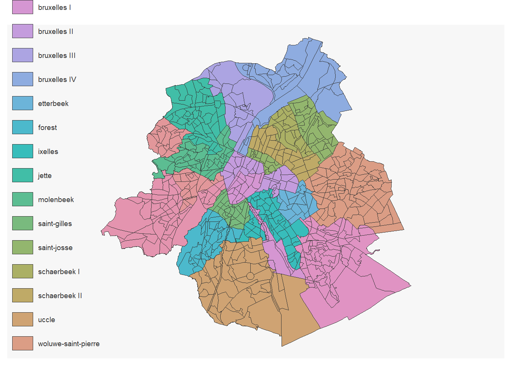
1.3.4.1.3 L’indice synthétique de difficulté:
secteurs_stats_indice<-secteurs_stats %>%
left_join(indice, by= c("cd_sector"="Secteur statistique")) %>%
filter(tx_rgn_descr_fr=="Région de Bruxelles-Capitale")
mf_map(secteurs_stats_indice,
var= "Indice synthétique de difficulté 2010",
type="choro",
pal= "Viridis")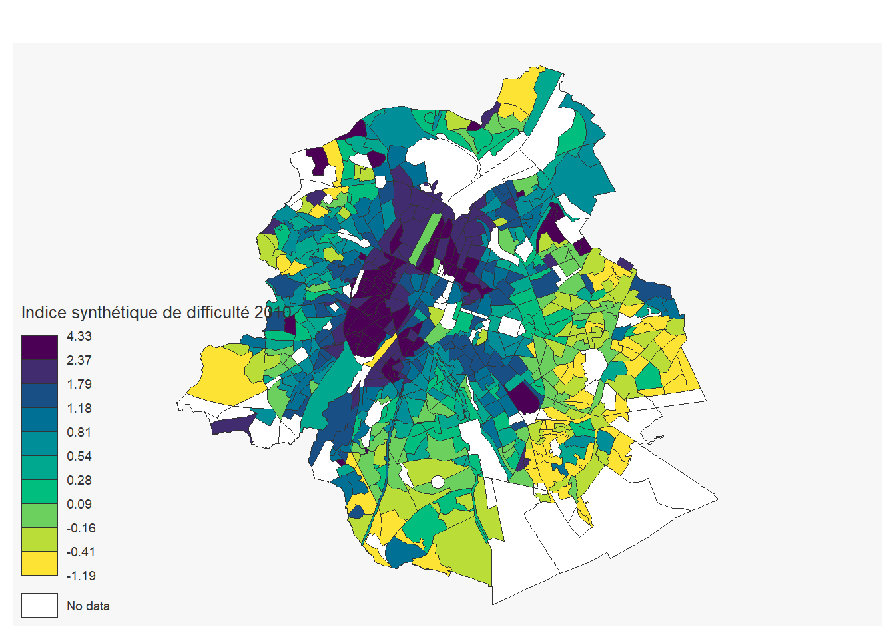
1.3.4.2 Régression
On réalise les jointures, on calcul un taux d’expulsions et on ne garde que les secteurs statistiques bruxellois qui ont plus de 200 logements loués
secteurs_stats_expulsions<-secteurs_stats %>%
left_join(expulsions, by=c("cd_sector"="ID_SS_bis")) %>%
left_join(logements, by= c("cd_sector"="Secteur statistique")) %>%
left_join(indice, by= c("cd_sector"="Secteur statistique")) %>%
left_join(canton_secteurs,by= c("cd_sector")) %>%
mutate(tx_expulsion=100*exp_total /`Logements loués`) %>%
filter(tx_rgn_descr_fr=="Région de Bruxelles-Capitale") %>%
filter (`Logements loués`>200)On peut analyser le lien entre indice synthétique et le taux d’expulsion:
secteurs_stats_expulsions%>%
ggplot( aes(`Indice synthétique de difficulté 2010`, tx_expulsion)) +
geom_point(alpha=0.3,cex=0.5)+
geom_smooth(formula = y ~ x, method = "lm")
Et réaliser une régression
model1<-lm(tx_expulsion~ `Indice synthétique de difficulté 2010`,data= secteurs_stats_expulsions )
summary(model1)##
## Call:
## lm(formula = tx_expulsion ~ `Indice synthétique de difficulté 2010`,
## data = secteurs_stats_expulsions)
##
## Residuals:
## Min 1Q Median 3Q Max
## -1.49704 -0.43992 -0.08241 0.37774 2.96598
##
## Coefficients:
## Estimate Std. Error
## (Intercept) 1.15698 0.04469
## `Indice synthétique de difficulté 2010` 0.15447 0.03208
## t value Pr(>|t|)
## (Intercept) 25.887 < 2e-16 ***
## `Indice synthétique de difficulté 2010` 4.815 2.02e-06 ***
## ---
## Signif. codes:
## 0 '***' 0.001 '**' 0.01 '*' 0.05 '.' 0.1 ' ' 1
##
## Residual standard error: 0.6788 on 450 degrees of freedom
## Multiple R-squared: 0.04899, Adjusted R-squared: 0.04688
## F-statistic: 23.18 on 1 and 450 DF, p-value: 2.018e-06On peut à nouveau cartographier les résidus
secteurs_stats_expulsions1<-secteurs_stats_expulsions %>%
add_residuals( model1)
mf_map(x = filter(secteurs_stats, tx_rgn_descr_fr=="Région de Bruxelles-Capitale"),
col = "white", border = "grey")
mf_map(secteurs_stats_expulsions1,
var=c("exp_total", "resid"),
type="prop_choro",
pal= "Viridis",
inches=0.11,
nbreaks=5,
add=T)## 11 '0' values are not plotted on the map.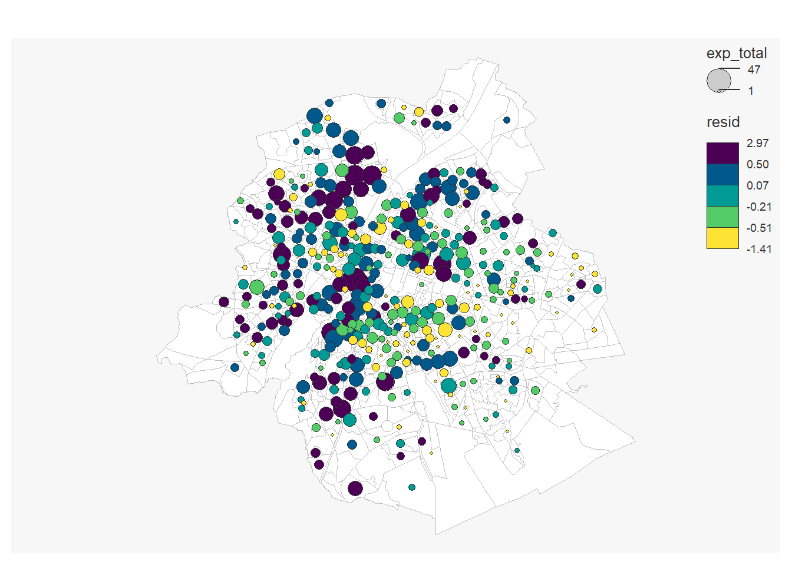
On peut pondéré la régression par le nombre de logements loués. Dans le cas où on a des entités de tailles très différentes cela peut avoir du sens
model2<-lm(tx_expulsion~ `Indice synthétique de difficulté 2010`, weights = `Logements loués`,data= secteurs_stats_expulsions )
summary(model2)##
## Call:
## lm(formula = tx_expulsion ~ `Indice synthétique de difficulté 2010`,
## data = secteurs_stats_expulsions, weights = `Logements loués`)
##
## Weighted Residuals:
## Min 1Q Median 3Q Max
## -110.573 -9.817 -1.243 9.429 63.777
##
## Coefficients:
## Estimate Std. Error
## (Intercept) 1.17420 0.04720
## `Indice synthétique de difficulté 2010` 0.10944 0.03095
## t value Pr(>|t|)
## (Intercept) 24.879 < 2e-16 ***
## `Indice synthétique de difficulté 2010` 3.536 0.000448 ***
## ---
## Signif. codes:
## 0 '***' 0.001 '**' 0.01 '*' 0.05 '.' 0.1 ' ' 1
##
## Residual standard error: 16.14 on 450 degrees of freedom
## Multiple R-squared: 0.02704, Adjusted R-squared: 0.02488
## F-statistic: 12.5 on 1 and 450 DF, p-value: 0.000448secteurs_stats_expulsions%>%
ggplot( aes(x=`Indice synthétique de difficulté 2010`,y= tx_expulsion)) +
geom_point(alpha=0.3, aes( size= `Logements loués` ) )+
geom_smooth(formula = y ~ x, method = "lm", mapping = aes(weight = `Logements loués`))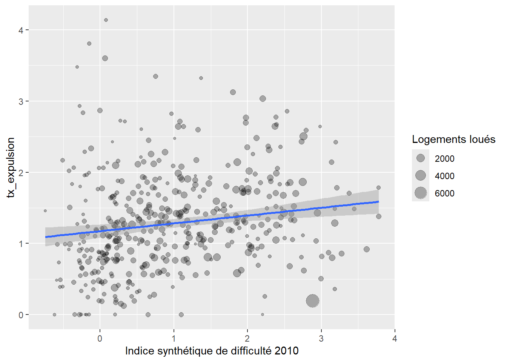
On peut ajouter la variable canton pour mesurer “l’effet juge”
model3<-lm(tx_expulsion~ `Indice synthétique de difficulté 2010`+ CANTON,data= secteurs_stats_expulsions )
library(ggstats)
ggcoef_table(model3)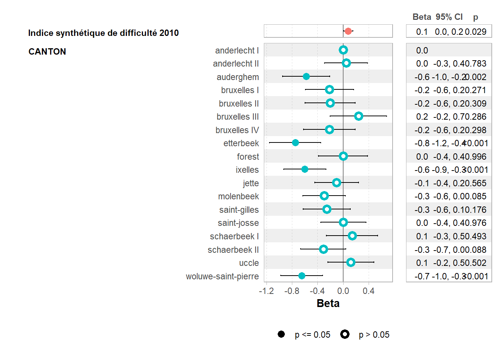